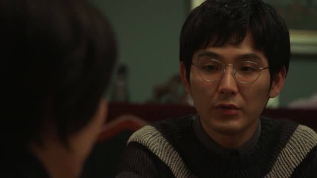
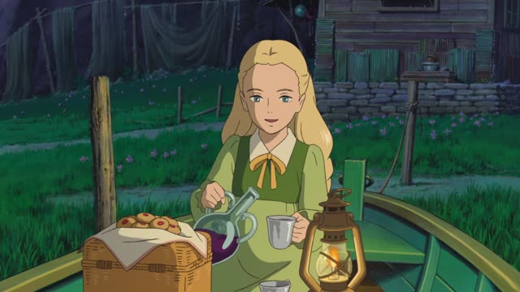
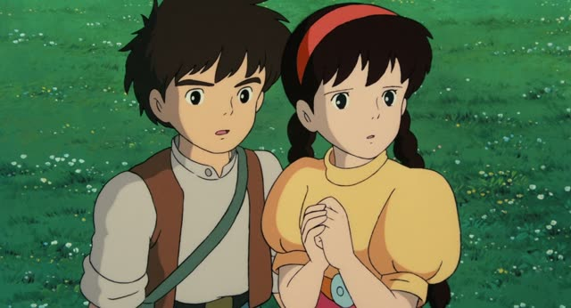
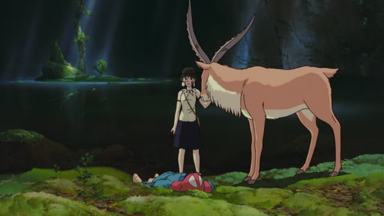
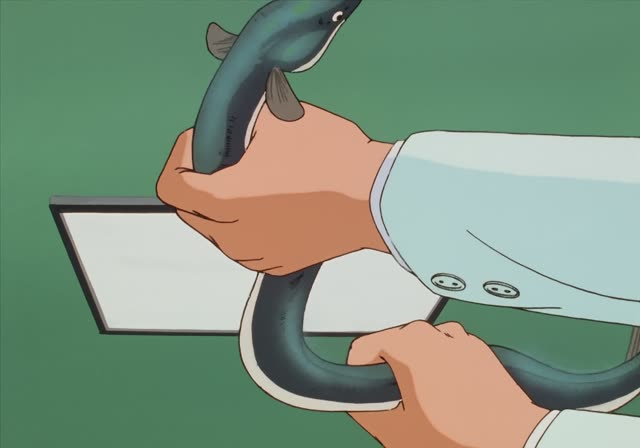
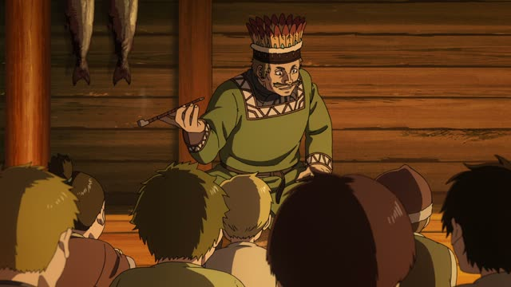
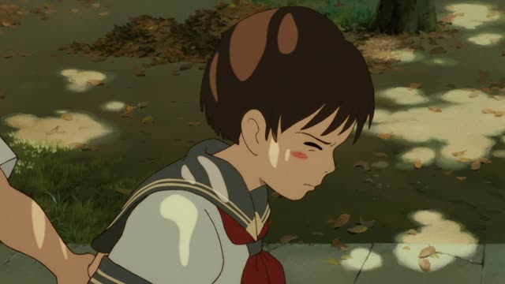

ずっと

Quartet · Episode 2
ずっとあなたのことが好きです。
"I've always loved you."
ずっと means "the whole time, all along": something goes on without a break, often right up to now. It goes before the verb or adjective it stretches out.
On this card, Beppu confesses to Maki: not just today, he has loved her all along. です makes it polite.
In a comparison ずっと means "by far": AよりBの方がずっと高い, "B is far more expensive than A". You'll see it below.
Last Samurai Standing · Episode 3
ずっと待ってたよ。
"I've been waiting all this time."
On this card, someone who has been after him finally stands in front of him. ずっと待ってた: waiting the whole time, until now. ～てた is the casual ～ていた.
Quick Examples
A friend asks how long you've lived in Osaka.
子どものころからずっと大阪です。
"I've lived in Osaka ever since I was a kid."
から + ずっと: from then until now.
PoliteYou spent the whole Sunday on the couch.
昨日はずっと寝てた。
"I slept all day yesterday."
CasualComparing two ways to get to Kyoto.
新幹線の方がずっと速いです。
"The bullet train is way faster."
In a comparison, ずっと means "by far".
PoliteSaying goodbye at the airport.
ずっと友達だよ。
"We'll always be friends."
About the future too: for good.
CasualWith and without
待ってたよ。
"I was waiting."
ずっと待ってたよ。
"I've been waiting the whole time." It went on and on.
Examples from Media
Death Note · Episode 7
ずっとアメリカにいる予定でした。
"I was planning to stay in America for good."
She had married there. ずっと: for the rest of her life.
Kekkon Dekinai Otoko · Episode 1
ここに来て２年、ずっとですよ。
"Two years since I came here, and it's been like that the whole time."
He gets sent on errands non-stop.

When Marnie Was There
２歳のときからずっとね。
"Since I was two, all along."
Her answer to "do you live in that mansion?".

Castle in the Sky
ずっと前に壊れたんだ。
"It broke down long ago."
ずっと前 = a long time ago.

Princess Mononoke
ずっとお前を守っていたんだ。
"He was protecting you the whole time."
San talks about Yakul, who stayed by Ashitaka's side.

Oishinbo · Episode 7
黒いウナギよりずっとうまい。
"It's far tastier than the black eels."
より + ずっと: the "by far" meaning.

Vinland Saga · Episode 1
ここよりもずっと暖かくてな。
"It was much warmer than here."
Leif tells the kids about Vinland. より + ずっと again.

Whisper of the Heart
だって、ずっと友達だったから。
"Because we've always been friends."
Shizuku turns down Sugimura: friends all along, nothing more.